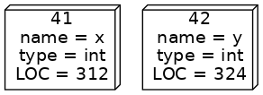
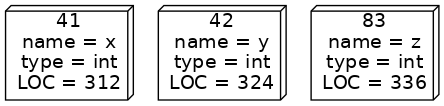

Data#
Data en handelingen op data
Informatica#
een taal leren \(\sim\) syntax (noodzakelijk, maar niet het punt)
… informatica studeren \(\sim\) semantiek (leren hoe machines denken!)
Een programmeertaal als Python leren heeft alles te maken met syntax waarmee je handelingen kan schrijven die een machine moet uitvoeren. Maar hiervoor heb je eerst andere kennis nodig, kennis die alles te maken heeft met wat de machine (bijvoorbeeld, jouw laptop) doet.

We gaan stap voor stap ontdekken wat er zich in de machine afspeelt en gaan we kijken naar data en handelingen op (of de verwerking van) data.
Handelingen en data#
x = 41
y = x + 1
Laten we om te beginnen de volgende twee variabelen x en y ieder een waarde toekennen. Deze waarden (41 en 42) worden in het geheugen opgeslagen.
Achter het doek#

Stel je een variabele voor als een doos: de inhoud van de doos is de waarde (bijvoorbeeld 41 of 42 in ons geval) met extra informatie over het type van de waarde (een int wat staat voor integer, een geheel getal) en een geheugenlocatie (LOC).
Geheugen#

Geheugen is een hele lange lijst van dit soort dozen, elk met een naam, waarde, type en geheugenlocatie.

Random Access Memory (RAM) is waar variabelen worden opgeslagen, een kaart zoals je deze hier ziet zit ook in jouw computer! Als je het zwarte materiaal voorzichtig zou weghalen zal een (microscopisch klein) raster zichtbaar worden.

Horizontaal zie je de bitlijnen, of adresregels (de geheugenlokatie) en verticaal de woordlijnen (of dataregels). Elk kruispunt is een condensator die elektrisch geladen of ongeladen kan zijn.
Bits#

Zo’n punt (een condensator) dat geladen (1 of True) of ongeladen (0 of False) kan zijn wordt een bit genoemd. Dit is de kleinst mogelijk informatie-eenheid!
Bytes#

Je zal ook vaak horen over bytes en dit is een verzameling van 8 aaneengesloten bits op een adresregel. Waarom 8 en niet 5, 10, 12 of meer (of minder) zal je je misschien afvragen? Dit is historisch bepaald en heeft alles te maken met het minimaal aantal bits dat ooit nodig was om een bepaalde set van karakters (letters en andere tekens) te kunnen representeren (ASCII om precies te zijn). Maak je geen zorgen om wat dit precies betekent, we komen hier nog op terug!
Woord?#

Woord in woordregel is niet een woord als in een zin (taal) maar een term die staat voor de natuurlijke eenheid van informatie voor een bepaalde computerarchitectuur. Tegenwoordig is deze voor de meeste systemen 64-bit, dit wordt ook wel de adresruimte van een architectuur genoemd.
Deze eenheid is van belang want het bepaalt bijvoorbeeld het grootste gehele getal dat kan worden opgeslagen. Maar hoe komen we van bits naar bytes en vervolgens tot getallen en andere data zul je je afvragen? Dit zul je later zien, eerst gaan we kijken naar de verschillende typen data die we kunnen onderscheiden.
Datatypes#
Alle talen hebben datatypes!
Type |
Voorbeeld |
Wat is het? |
|---|---|---|
|
|
decimale getallen |
|
|
gehele getallen |
|
|
het resultaat van een test of vergelijking met: |
type(42.0)
float
Dit zijn de eerste datatypes waar we kennis mee gaan maken en ze komen aardig overeen met wat wij (mensen!) kunnen onderscheiden, bijvoorbeeld gehele- of decimale getallen.
Ook een bool(ean) is uiteindelijk een getal: als we False typen zal Python dit lezen als 0. True en Falseis syntax (!) om het voor ons makkelijker te maken, maar semantisch staat het voor 1 en 0 (in ieder geval voor Python!).
Met de de functie type(x) kan je opvragen welk type Python denkt dat de waarde heeft.
Operatoren#
Speciale tekens die alles te maken hebben met handelingen op data.
Python operatoren#
Betekenis |
|
|---|---|
groepering |
|
machtsverheffing |
|
vermenigvuldiging, modulo, deling |
|
optelling, aftrekking |
|
vergelijking |
|
toekenning |
|
Net als bij rekenen moet je hier rekening houden met de bewerkingsvolgorde, hier zijn ze van meest naar minst belangrijk weergegeven. Het is niet nodig deze volgorde te onthouden, onze tip is waarden te groepereren in plaats van je zorgen te maken over de bewerkingsvolgorde.
Bij twee operatoren moeten we even stilstaan omdat niet direct duidelijk is wat ze doen, de modulo operator % en de integer deling // (in tegenstelling tot de gewone deling /).
Modulo operator %#
7 % 39 % 3
x % y is het restant wanneer x door y wordt gedeeld
11 % 3
2
Syntax check! Het maakt niet uit of je x%2 of x % 2 schrijft (met spaties), Python weet wat je bedoelt :)
Voorbeelden#
Test |
Mogelijke waarden van |
||
|---|---|---|---|
A |
|
||
B |
|
||
C |
|
Wat gebeurt hier als |
|
D |
|
Wat gebeurt hier als |
3 % 2 == 0
False
A en B hebben alles te maken met even en oneven getallen, voorbeeld C met schrikkeljaren en voorbeeld D misschien met het digitaal display van jouw wekker?
Integer deling#
7 // 39 // 330 // 7
x // y is als x / y maar dan afgerond tot een geheel getal
30 // 7
4
De // operator rondt af naar beneden, maar dan ook volledig naar beneden! In het Engels staat de // operator naast “integer division†ook bekend als “floor divisionâ€: floor als in vloer (het laagste) in tegenstelling tot ceiling (plafond, hoogste). Maar er is meer aan de hand, want je zult zien dat // veel lijkt op de % operator!
De verdeling van 30 in veelheden van 7:
30 == (4) * 7 + (2)
Zouden we dit kunnen generaliseren tot een algemene regel met behulp van de operatoren // en % die we nu hebben leren kennen?
De verdeling van x in veelheden van y
x == (x // y) * y + (x % y)
en dit ingevuld voor ons voorbeeld:
30 = (30 // 7) * 7 + (30 % 7)
En daar is de % operator weer :) Je zult later zien dat het gebruik van % en // bijzonder handig is als we gaan rekenen met … bits!
Kort samengevat: de // operator rondt volledig naar beneden af (door alles achter de komma weg te laten).
Wat is gelijk?#
Een waarde TOEKENNEN |
IS NIET gelijk aan |
een waarde TESTEN |
|---|---|---|
|
|
|
De enkele = ken je van wiskunde waar je \(a = 1\) zal uitspreken als “a is gelijk aan 1â€. Bij programmeertalen is dit anders en wordt “ken aan a de waarde 1 toe†bedoeld. Om te testen of de waarde gelijk is aan een andere waarde wordt == gebruikt (en != voor is niet gelijk aan).
Identiteit#
Is == een test op waarde of identiteit (de geheugenlokatie waar de waarde leeft)?
Sommige talen hebben ===!
Er is een verschil tussen testen op waarde en testen op identiteit (of het hetzelfde “doos†is, de geheugenlokatie). Python heeft geen === (zoals Javascript, een programeertal gebruikt in browsers) maar heeft speciaal voor dit geval is, bijvoorbeeld a is b om te vergelijken op basis van identiteit.
Vergelijken op waarde of identiteit met == kan erg verschillen per taal. Voor Java (een veel gebruikte programmeertaal) betekent == een test op identiteit. Python heeft gekozen om == een test op gelijkheid van waarde te laten zijn. Dit ligt misschien het dichtst bij hoe mensen denken, zeker als het gaat om vergelijken van bijvoorbeeld getallen of tekst.
Een voorbeeld om het verschil duidelijk te maken.
a = 3141592
b = 3141592
Gegeven twee variabelen a en b met dezelfde waarde
a == b
True
zal inderdaar blijken dat a en b een gelijke waarde hebben.
a is b
False
maar een vergelijking op basis van identiteit zal niet slagen…
print(id(a))
print(id(b))
140313203127216
140313203129072
id(x) geeft de adreslokatie van een waarde terug. Je kan zien dat a en b anders zijn, hoewel ze tóch dezelfe waarde hebben! (let op, deze geheugenlokaties kunnen verschillen met jouw computer!)
Quiz#
Voer de volgende regels uit:
x = 41
y = x + 1
z = x + y
Welke waarden hebben x, y en z?
x = 41
y = x + 1
z = x + y
print(x, y, z)
41 42 83
Voer vervolgens de volgende regel uit:
x = x + y
Welke waarden hebben x, y en z nu?
x = x + y
print(x, y, z)
83 42 83
Achter de schermen#
x = 41
y = x + 1
z = x + y
In het geheugen:

De drie variabelen x, y en z zijn nu in het geheugen bewaard op drie verschillende lokaties.
Laatste stap:
x = x + y
In het geheugen:

Met de laatste stap wijzigen we de waarde van x en dit betekent dat de oorspronkelijke lokatie wordt gewist en de nieuwe waarde in het geheugen wordt gezet, op een nieuwe lokatie!
Je kan de identiteit (de geheugenlokatie) in Python opvragen met id(x). Probeer dit eens met x voor en na de laatste operatie en je zal zien dat ze verschillend zijn. Het wissen of verwijderen van een waarde kan je doen met del x (dus zonder de haakjes ()).
Extra#
a = 11 // 2
b = a % 3
c = b ** a+b * a
Welke waarden hebben a, b en c?
a = 11 // 2
b = a % 3
c = b ** a+b * a
print(a, b, c)
5 2 42
Cultuur#

Het boek The Hitchhiker’s Guide to the Galaxy van Douglas Adams heeft sporen nagelaten in onder andere informatica: de kans is groot dat je in voorbeelden of uitwerkingen het getal 42 tegenkomt. Maar ook in het gewone leven als je op 25 mei mensen met een handdoek ziet lopen …